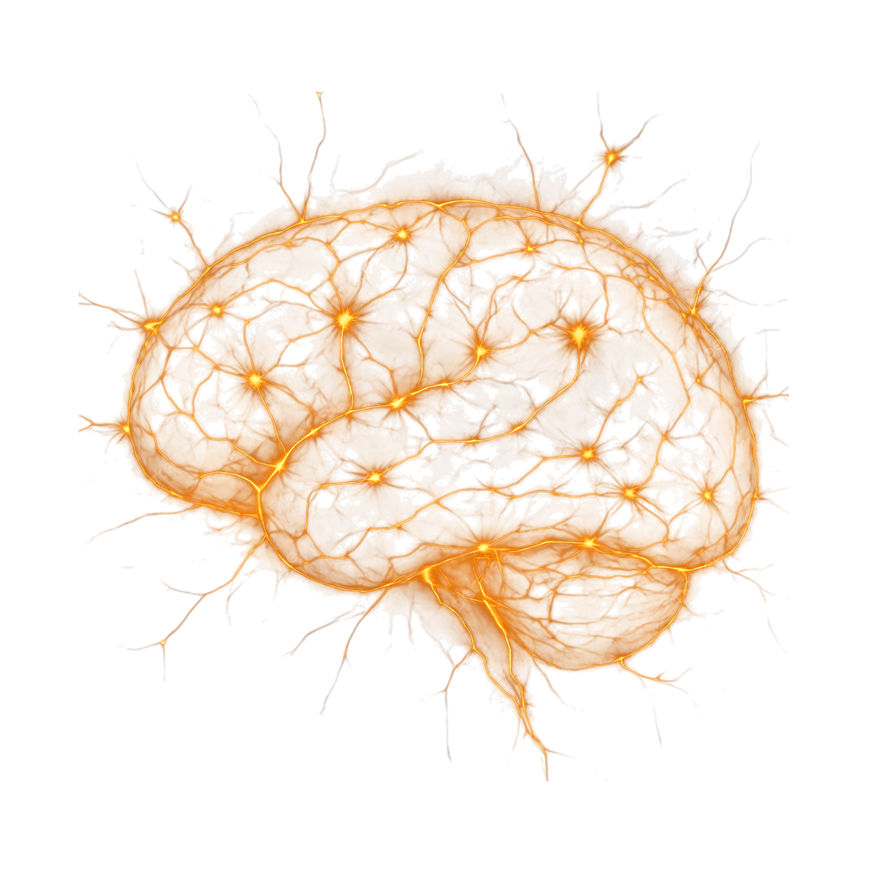

Neurochimie
La neurochimie est une branche de la biochimie s’intéressant à l’étude des substances associés au fonctionnement du système nerveux. Pour ce faire, ils étudient, par exemple, les neurotransmetteurs, afin de comprendre leur rôle et le but des substances secrétées par ces derniers. Alors, la neurochimie est en collaboration étroite avec la neuropharmacologie, soit, l’étude des effets des drogues et substances pharmacologiques sur le système nerveux, puisqu’avec la compréhension des propriétés des substances, on peut plus facilement élaborer des médicaments.
Spécialistes
Dans cette spécialité, c’est le neurochimiste qui étudie la biochimie du système nerveux.
Études
Pour devenir neurochimiste au Québec, il faut avoir un diplôme d’étude collégiales en sciences lettres et arts ou en science de la nature avec les compétences de biologie et de chimie. Ainsi, il sera possible de faire un doctorat en médecine. Avec ce doctorat, il est possible d’être admis au programme de maîtrise en neuroscience, ce qui permettra de développer ses connaissances basiques et d’effectuer un travail de recherche afin de s’initier au champ d’étude de la neurochimie.
